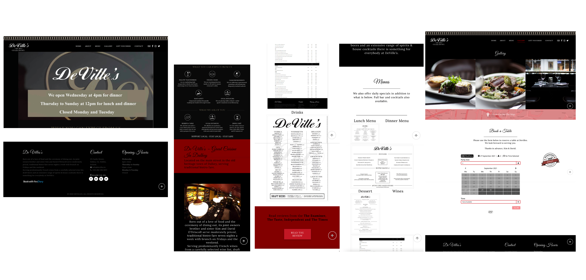
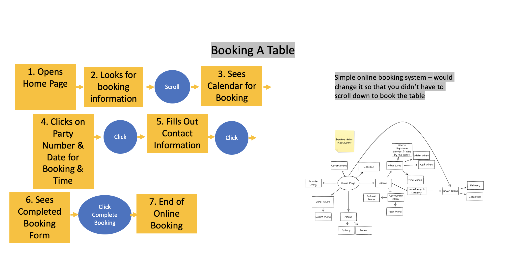
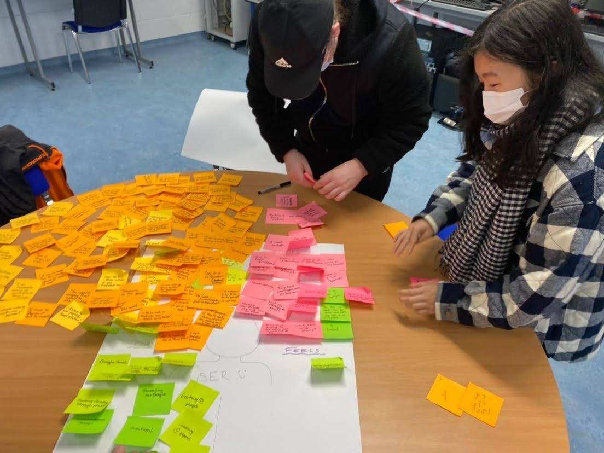
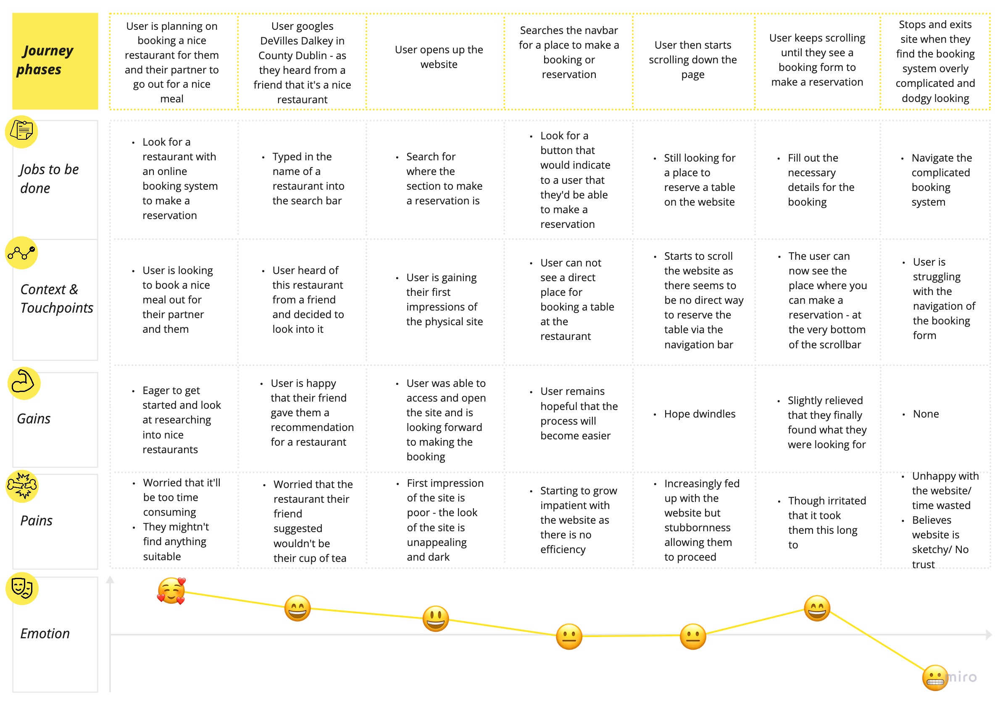
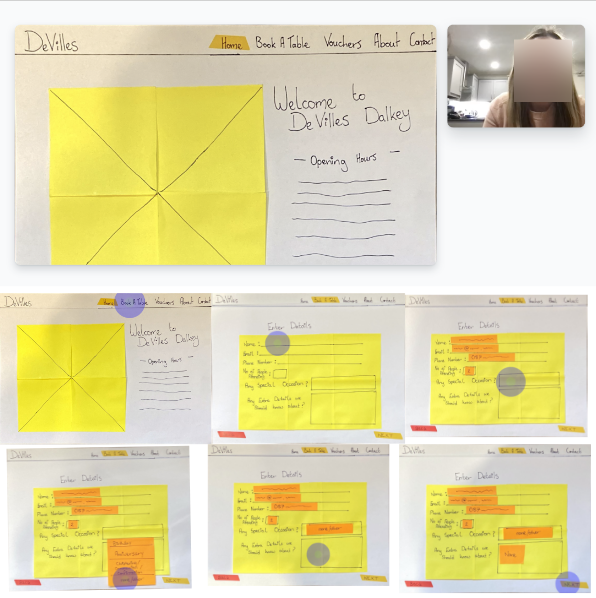
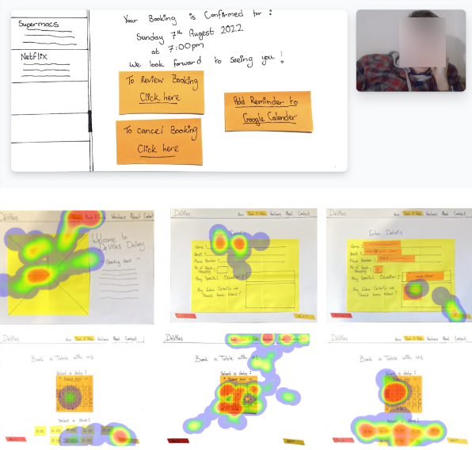
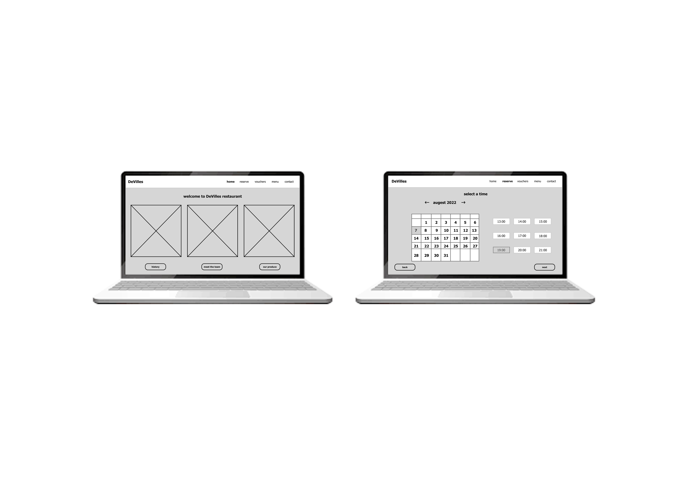
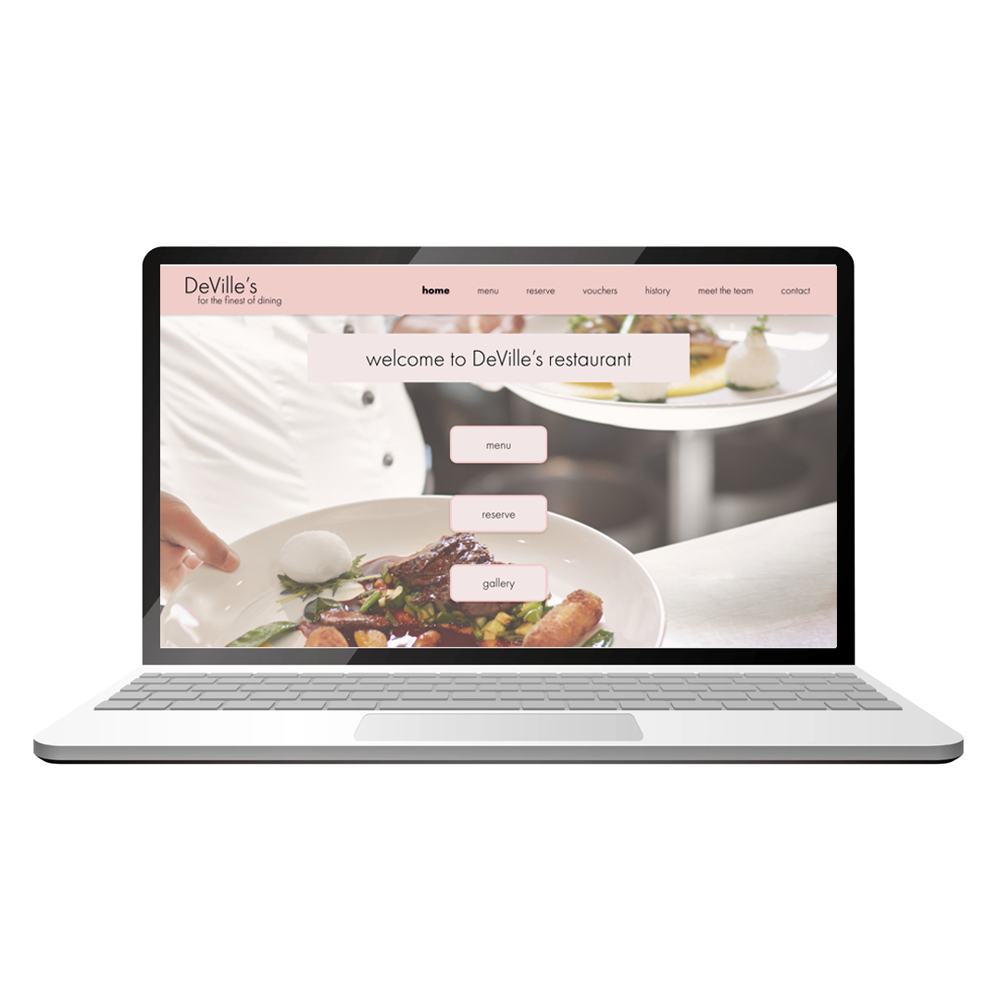

DeVille's Restaurant Website Redesign
role: sole ux/ui designer | client: deville's restaurant | tools: adobe xd
|
DeVille's is a restaurant in the affluent village of Dalkey, Co. Dublin, home to many of Ireland's multi-millionaires. the client company is looking for a website re-design that will properly reflect their passion
the origional website got negative reviews because users weren't able to navigate the site properly in order to make reservations and purchase vouchers. based on the content of the reviews, we hypothesised what we could do to make the user's experience better. |
 |
|  |
user flowsketch/use digital media to illustrate the DeVille's website's user flow based on the option below: information about the restaurant including some history and menu highlights |
what did i do?i was the sole ux designer/researcher on this project, conducting everything from research to usability tests and creating prototypes from low fidelity paper prototypes to digital, interactive hi-fi designs. i was responsible for determining the overall design direction of the project, while communicating with my lecturer and peers to gain feedback on my work. empathy mapthe empathy-mapping process helps distil and categorise your knowledge of the user into one place. It can be used to capture who a user is. it makes sense of qualitative research (research notes, user-interviews). |
 |
|  |
customer journey mapusability testing on the origional site showed that users could not navigate the site comfortably in order to make reservations or purchase vouchers. there for work was needed to redesign the website to make it more comfortable for the users. using the pain points gathered from users to see what needed to be improved on the most. pain points
|
ideal customer journey mapto get the ideal customer journey - we take what the user wants to experience when booking a table at a restaurants website and implement that into a customer journey map that always leaves the user satisfied. |

|

|
storyboardthe storyboard is used to give a visual look into the user's experience - the goal is to tell the story of a user's journey through drawings/images. |
lo-fi prototypesketched screens and states were photographed and inserted into Marvel app for usability testing purposes. Research participant feedback was noted. |

|
|  |  |
lo-fi usability tests/notestwo research participants were interviewed, observed and recorded as they navigated through the low fidelity prototype. qualitative research notes were transcribed, heat map data was retrieved and shown below. noted research participant feedback was incorporated into further product development. the low fidelity prototype was consequently updated and tested again. |
mid-fi prototypefollowing low fidelity product development, screens and screen states were then created using adobe xd and tested by research participants via the programs usability testing feature. research participant feedback was further incorporated into product development. the mid fidelity prototype was consequently cyclically iterated, tested and updated. |
 |

|

|
a/b testingafter the mid-fi process, we start looking into different design decisions for the website. when there are a few options for the same thing; such as font, colour palette, slogan or if theres different options for designing a certain page of the project. we ask users to assist in picking which one they favour the most, choosing a or b (sometimes even c!). |
high fidelity prototypefollowing mid fidelity product development, adobe xd documents were precisely converted to a different document and with carful colour choices following the theme and atmosphere i wanted to create - i made my high fidelity prototype. further usability tests were conducted on the the consequent high fidelity prototype. research participant feedback was noted and incorporated into further product development. try out the prototype |
 |